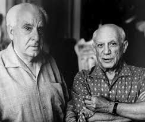
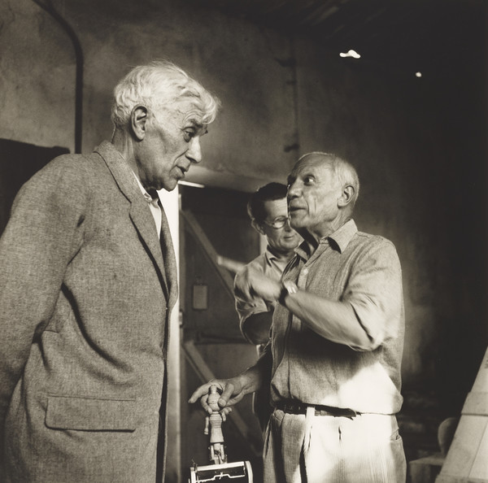
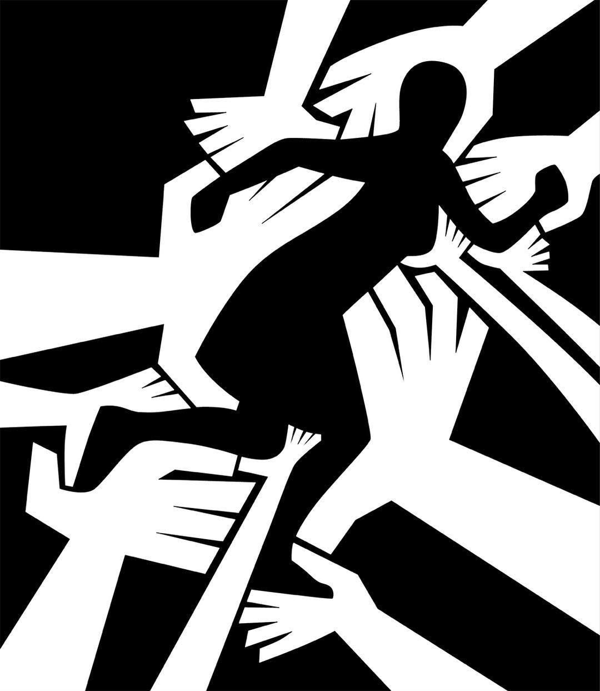

Cubismo
Romper la mirada
Entre 1907 y 1914, en París, dos jóvenes pintores decidieron que un cuadro no tenía por qué imitar lo que ve el ojo desde un solo lugar.
Pablo Picasso y Georges Braque descompusieron los objetos en planos geométricos, los mostraron desde varios puntos de vista a la vez y redujeron la paleta a ocres, grises y verdes. Más tarde pegaron papeles, diarios y tela sobre el lienzo. Así nació el Cubismo, la vanguardia que abrió la puerta al arte moderno.
Qué es el cubismo
- 1907 Picasso pinta Les Demoiselles d'Avignon.
- 1908 Un crítico habla de "cubos" ante los paisajes de Braque.
- 1912 Aparecen el collage y el papier collé.
Recorre el sitio
Conoce a sus creadores, mira las obras más importantes y descubre curiosidades que no suelen contarse.
